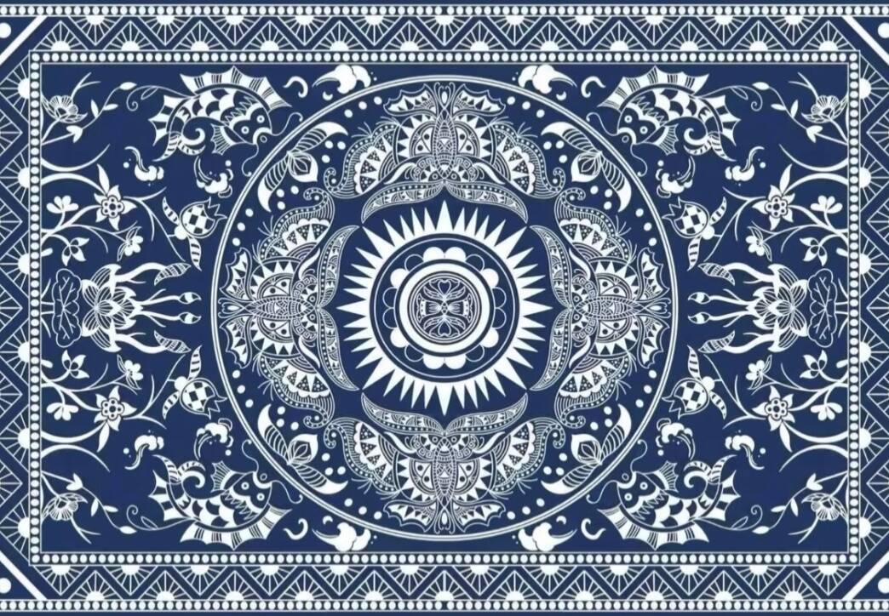
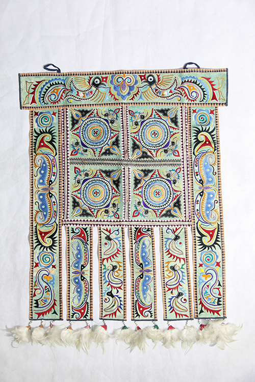
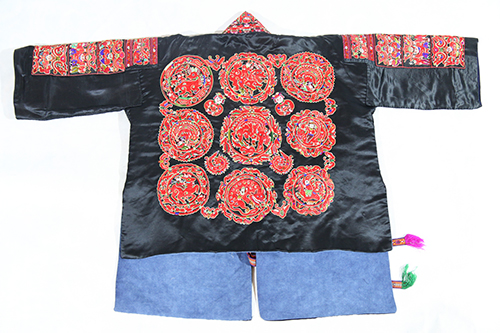
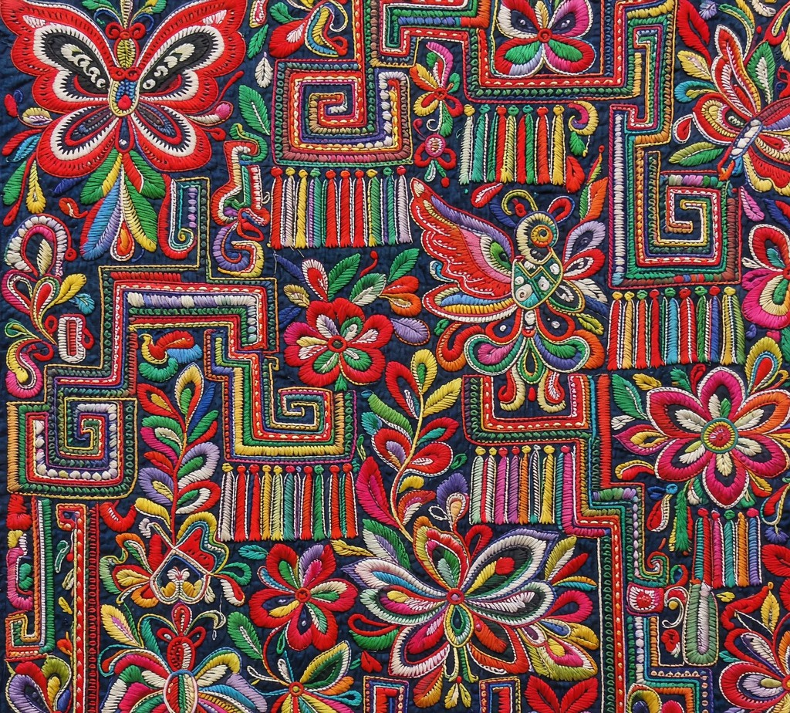

点按地图上的省份或自治州，查看代表性非遗条目
条目为代表性示例，正式名录以国务院公布为准 · 底图 DataV.GeoAtlas 标准行政区划
巍巍苗岭，藏着世代传承的手工文脉。苗族先民以巧手造物，锻银成饰、刺绣为诗、蜡染绘布， 将民族的神话、信仰与自然观察，凝结在一件件非遗作品之中。
苗族银饰为盛装之冠，银角象征牛图腾与山岳。匠人熔银锻坯，历经锤錾、编丝、焊接数十道工序， 将日月星辰、花鸟鸟兽錾刻入银器，是苗岭之间彰显身份、寄托祈愿的瑰宝。
苗绣以针为笔、以线为墨，蜡染以蜡代笔、冰纹生花。蝴蝶妈妈、鸟兽草木的纹样被凝于布帛， 一针一蜡，承载苗族古老传说，是流传千年的织物非遗。

蜡染 · 靛 蓝白冰纹 · 几何花鸟
苗绣 · 彩 蝴蝶妈妈 · 鸟兽花草
成品 · 衣 苗绣盛装 · 衣摆流光
工艺 · 针 彩线为墨 · 针脚成章